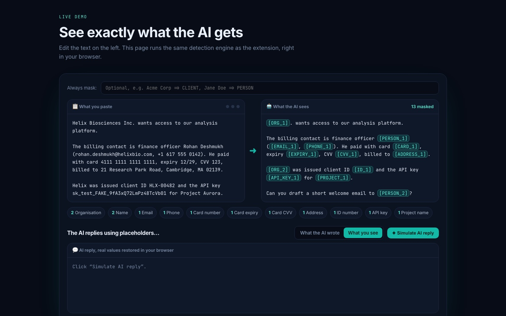

01 / Live · Shipped v0.2★ Featured
Chrome extension · AI privacy
PasteGuard
People paste client emails, tickets and code into ChatGPT every day, full of names, card details, IDs, addresses and API keys. PasteGuard masks them the moment you paste, so the AI only sees [EMAIL_1], then shows the real values back in the reply. Context-aware detection (“finance officer Rohan Deshmukh”, “CVV 123”, “client ID HLX-00482”), a memory-only vault and zero servers: nothing leaves the browser.
25detectors: checksums, context and inference
0 bytessent to any server
9 AI sitesChatGPT, Claude, Gemini & more